아이템 · 장비 아이콘 · 2026-09-22
전투 도끼는 화면이 자른 게 아니다
출고된 32×32 파일 안에, 잘린 도끼와 가로줄과 작은 조각이 한 장으로 들어 있었다. 목록·인벤토리·상점은 이 파일을 통째로 줄여 그리므로, 칸에 맞추기만 해도 잘린 채로 보인다.
세 장을 같은 크기로
왼쪽이 지금까지 쓰던 파일, 가운데가 128px 원본, 오른쪽이 그 원본을 32px에 다시 맞춘 지금 파일이다. 픽셀은 그대로 확대해서 보간하지 않았다.
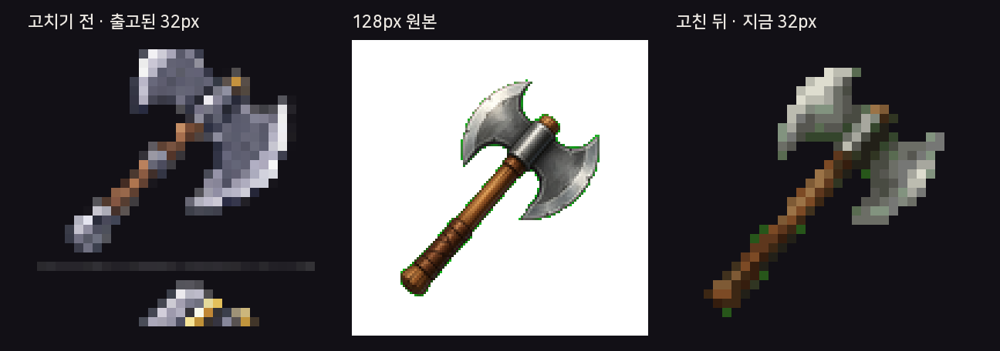
파일 안에서 어디가 끊겼나
32칸짜리 그림의 24번째 줄(0부터 세면 y=24)은 알파가 최대 42인 희미한 가로줄이다. 거의 안 보이지만 폭은 30칸이다. 그 위 도끼는 머리가 프레임에 닿아 잘렸고, 줄 아래에는 도끼가 아닌 조각이 따로 있다.
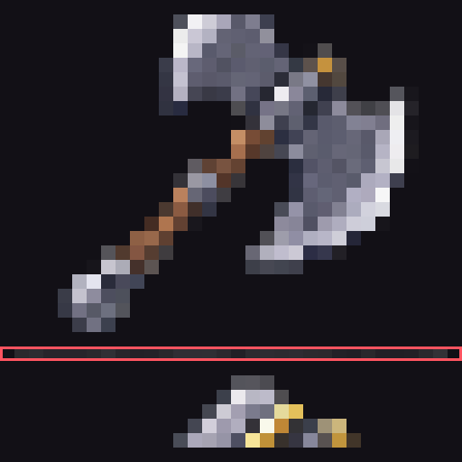
| 줄 | 무엇이 있나 |
|---|---|
| y 1–22 | 도끼 본체. 위·오른쪽 머리가 칸 끝에 붙어서 날 끝이 없다 |
| y 23 | 빈 줄 |
| y 24 | 희미한 가로줄. 불투명에 가까운 픽셀은 0개, 알파 최대 42 |
| y 26–30 | 아래쪽에 따로 놓인 작은 조각 |
같은 결로 고친 아이콘은 48장이다. 판정은 가운데를 가르는 희미한 줄, 또는 본체가 끝난 뒤 빈 줄을 두고 아래에 다시 그림이 있는 경우다. 원본은 asset-backups/icon-pixelate-2026-09-21/jetrel-icons-128/ 이다.
같은 증상
각 칸의 왼쪽이 고치기 전, 오른쪽이 고친 뒤다. 큰 도끼·단검·레이피어·채찍·낫·망치도 아래에 조각이 남아 있었다.
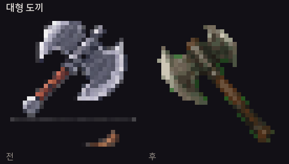
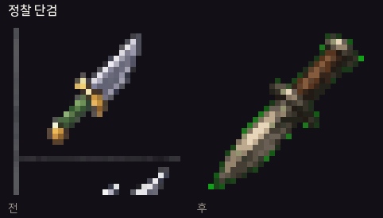
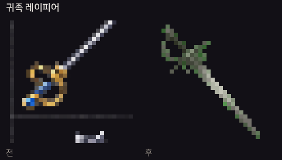
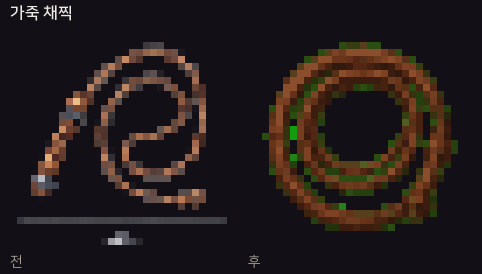
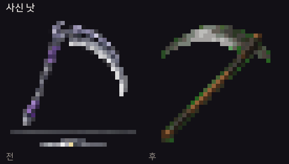
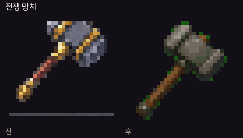
같이 고친 나머지
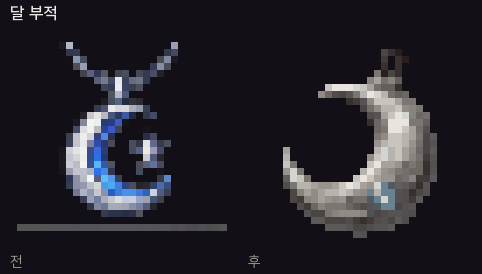
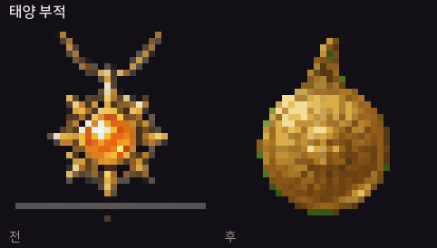
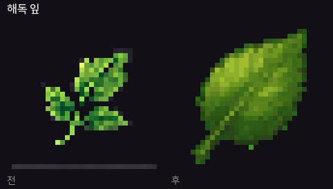
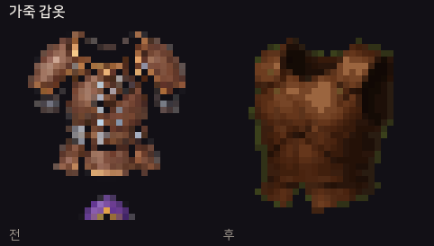
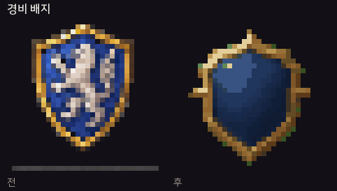
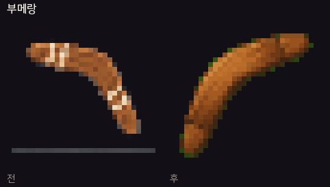
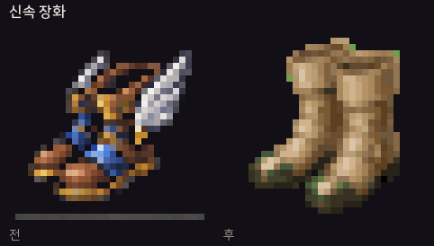
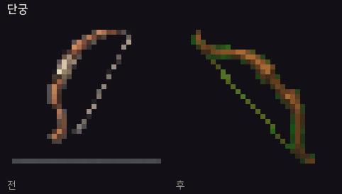
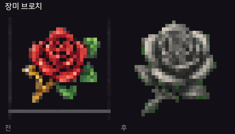
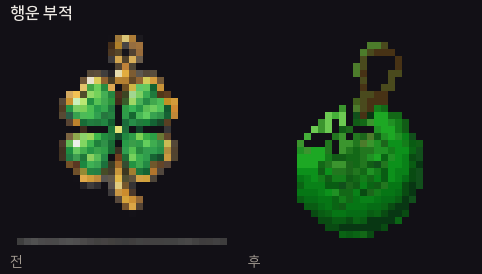
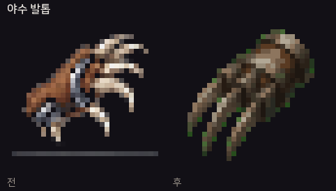
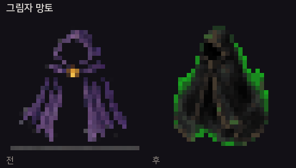
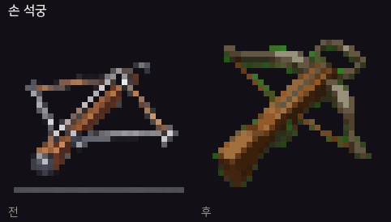
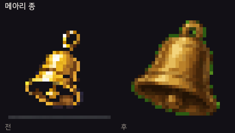
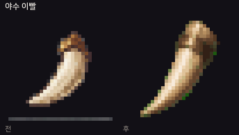
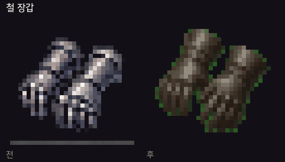
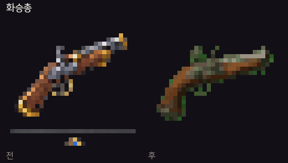
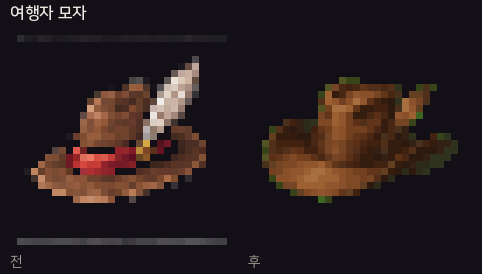
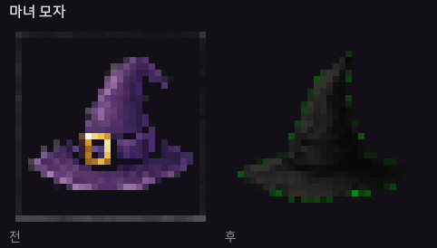
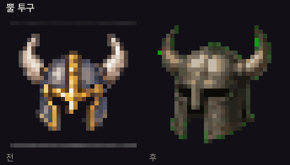
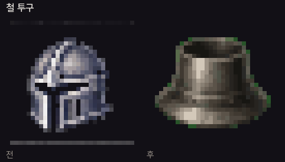
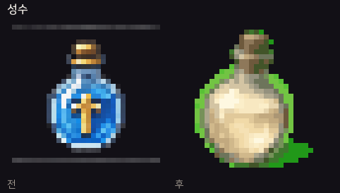
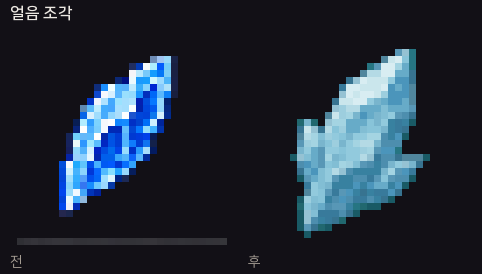
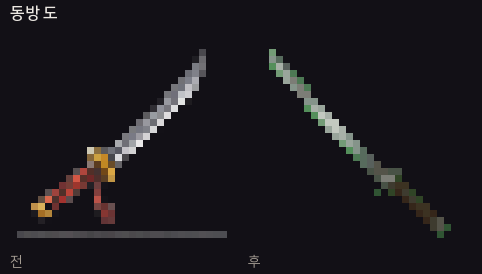
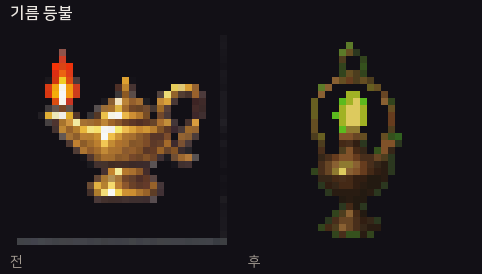
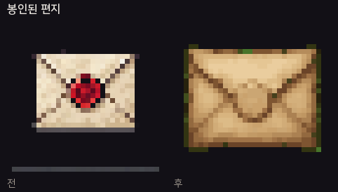
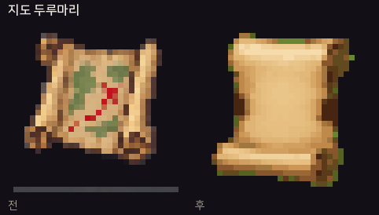
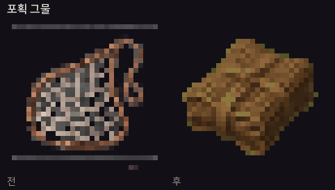
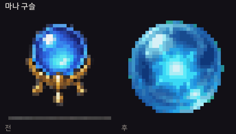
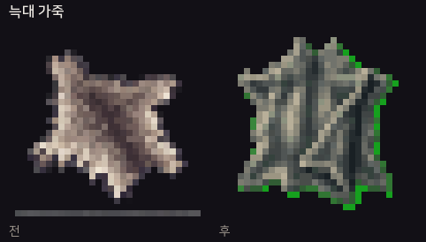
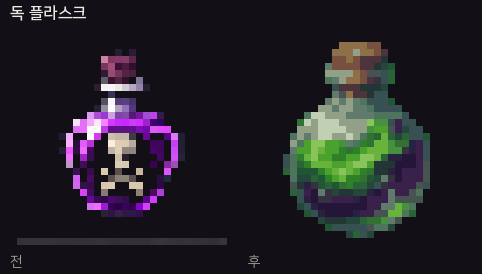
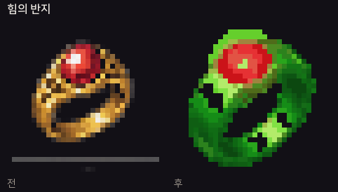
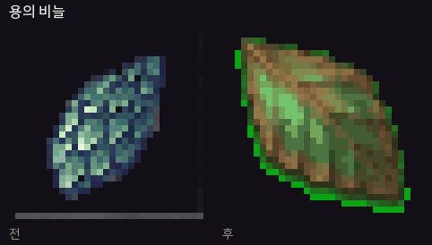
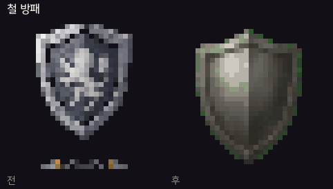
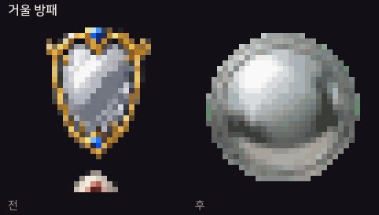
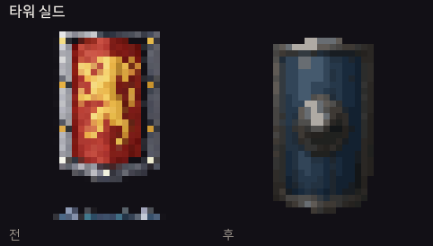
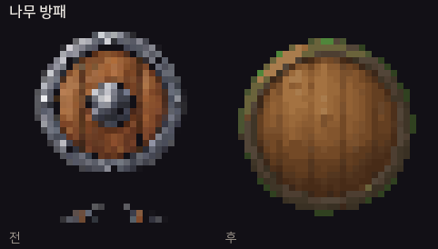
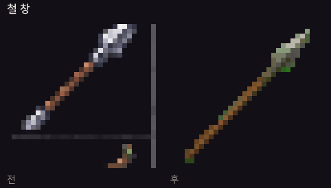
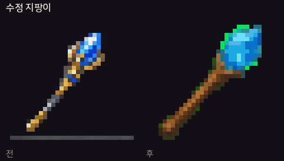
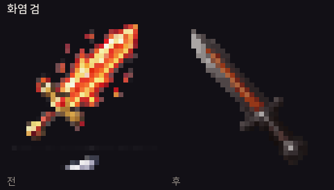
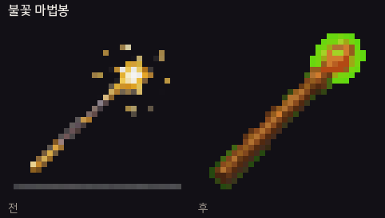
아이콘을 바꾸는 쪽
아이템·장비 상세의 큰 아이콘을 누르면 고르기 창이 열린다. 외형 카드를 펼치지 않아도 된다. 고르기 창은 「설정됨」 대신 아이콘 이름을 보여주고, 아이콘과 이미지는 한 줄 목록이 아니라 격자로 고른다.